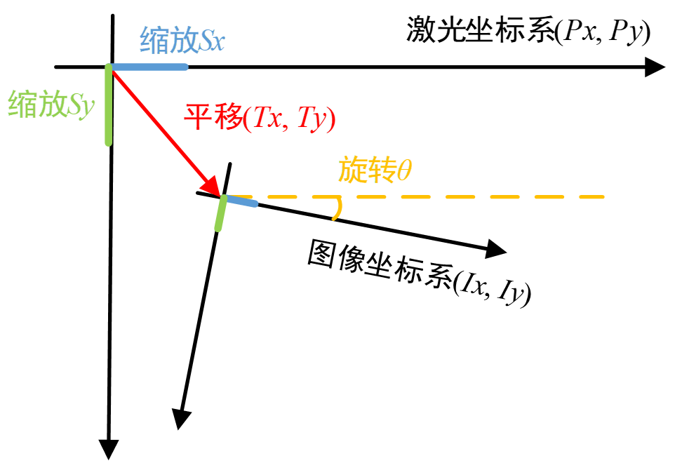
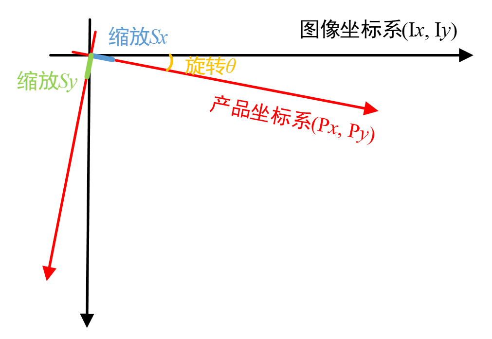
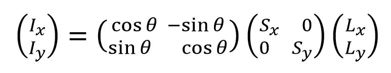
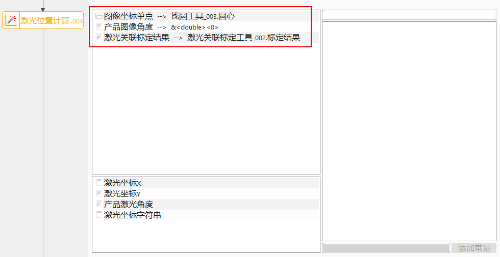
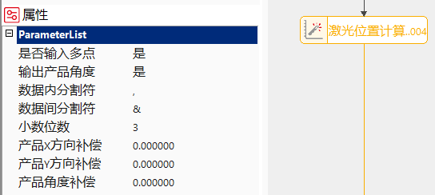
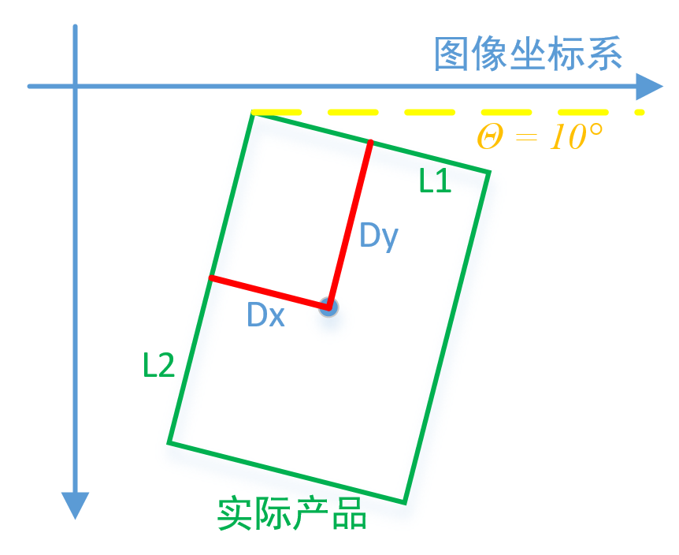
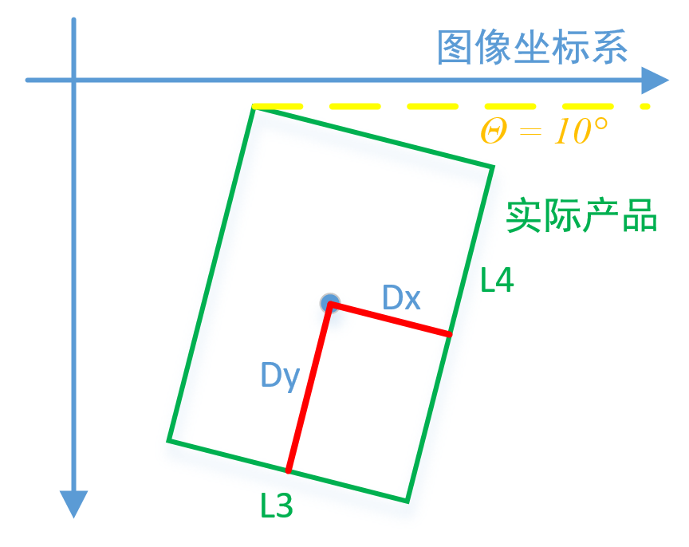

Công cụ tính toán vị trí Laser chủ yếu sử dụng các tọa độ hình ảnh được liên kết, kết quả hiệu chuẩn liên kết Laser (Laser Relative Calibration) và các giá trị bù (Compensation) trong cột thuộc tính để tính toán giá trị tọa độ tương ứng của tọa độ hình ảnh đầu vào trong hệ tọa độ Laser.
Trong các kịch bản ứng dụng phổ biến như cắt laser, khắc laser, hàn laser..., công cụ này có thể được sử dụng để chuyển đổi bất kỳ một điểm hoặc nhiều điểm từ hệ tọa độ hình ảnh sang hệ tọa độ Laser.
Từ mô tả nguyên lý trong "Công cụ hiệu chuẩn liên kết Laser", có thể trừu tượng hóa mối quan hệ giữa hệ tọa độ hình ảnh và hệ tọa độ laser như Hình 1.

Mối quan hệ chuyển đổi giữa hai hệ tọa độ có thể được biểu diễn bằng công thức sau. Khi hoàn tất tính toán hiệu chuẩn liên kết laser, quan hệ chuyển đổi trong công thức này trở thành một đại lượng đã biết. Lúc này, dựa trên tọa độ hình ảnh được liên kết và quan hệ chuyển đổi, có thể tính toán được tọa độ Laser tương ứng.
Khi thực hiện tính toán giá trị bù, hệ tọa độ được sử dụng là hệ tọa độ sản phẩm. Hình 2 hiển thị sơ đồ mối quan hệ giữa hệ tọa độ sản phẩm và hệ tọa độ hình ảnh. Hai loại hệ tọa độ này đồng nhất (đều là hệ tọa độ tay trái), hướng dương đồng nhất (sang phải, xuống dưới, thuận chiều kim đồng hồ), chỉ tồn tại mối quan hệ về góc xoay và tỷ lệ thu phóng (scaling).

Mối quan hệ chuyển đổi giữa hai hệ tọa độ có thể được biểu diễn bằng công thức sau. Dựa trên góc hình ảnh sản phẩm được liên kết, có thể thu được các tham số của ma trận thứ nhất; dựa trên kết quả hiệu chuẩn liên kết laser được liên kết, có thể thu được các tham số của ma trận thứ hai. Từ đó, quan hệ chuyển đổi này chuyển đổi giá trị bù trong hệ tọa độ sản phẩm sang giá trị bù trong hệ tọa độ hình ảnh, sau đó dựa vào kết quả hiệu chuẩn liên kết laser để chuyển đổi tiếp sang hệ tọa độ laser, từ đó thu được giá trị bù cuối cùng.

Quy trình thực thi của công cụ: Cấu hình đầu vào -> Thiết lập tham số cột thuộc tính -> Thực thi tính toán.
Nhấp đúp vào công cụ, cấu hình hình ảnh đầu vào trong cửa sổ hiện ra, như Hình 3.

Nhấp vào công cụ, như Hình 4, để thực hiện thiết lập các tham số trong cột thuộc tính của công cụ tính toán tọa độ Laser.

Khi chọn "Không", bạn có thể liên kết tọa độ hình ảnh đơn điểm trong chuỗi tham số. Khi chọn "Có", bạn cần liên kết một mảng (array) tọa độ hình ảnh và công cụ sẽ xuất ra tọa độ Laser cho tất cả các điểm cùng một lúc.
1. Khi chọn "Có": Nếu là đơn điểm, ô đầu ra sẽ có "Góc Laser sản phẩm"; nếu là đa điểm, kiểu tọa độ Laser ở ô đầu ra sẽ là vector
2. Khi chọn "Không": Nếu là đơn điểm, ô đầu ra sẽ không có "Góc Laser sản phẩm"; nếu là đa điểm, kiểu tọa độ Laser ở ô đầu ra sẽ là vector
Tham số này không ảnh hưởng đến giá trị tọa độ Laser X và Y, nó chỉ quyết định việc có hiển thị thông tin góc trong kết quả đầu ra hay không. Việc thêm thiết lập này chủ yếu là vì trong các ứng dụng laser, có khoảng 50% dự án không cần gửi thông tin góc. Để người dùng có thể sử dụng trực tiếp kết quả đầu ra mà không cần phân tích (parse) thêm, tùy chọn này cho phép loại bỏ thông tin góc khỏi chuỗi kết quả khi không cần thiết.
Kiểm soát dấu phân cách bên trong mỗi giá trị tọa độ Laser trong "Chuỗi tọa độ Laser". Ví dụ: tọa độ Laser là [10, 10, 0.5], nếu dấu phân cách này được đặt là ",", chuỗi kết quả sẽ là 10,10,0.5; nếu đặt là ";", chuỗi kết quả sẽ là 10;10;0.5.
Kiểm soát dấu phân cách giữa các giá trị tọa độ Laser khác nhau trong "Chuỗi tọa độ Laser". Ví dụ: mảng tọa độ Laser có kích thước là 2, lần lượt là [10, 10, 0.5] và [20, 20, 0.5]. Nếu dấu phân cách này được đặt là "&", chuỗi kết quả sẽ là 10,10,0.5&20,20,0.5; nếu đặt là "||", chuỗi kết quả sẽ là 10,10,0.5||20,20,0.5.
Kiểm soát số chữ số thập phân được giữ lại khi chuyển đổi mỗi giá trị tọa độ Laser sang chuỗi ký tự, phạm vi từ [0, 6]. Ví dụ: khi giá trị này là 3, tọa độ Laser [10, 10, 0.5] sẽ được chuyển thành chuỗi 10.000,10.000,0.500.
Giá trị bù theo hướng X của sản phẩm cho tọa độ Laser đầu ra. Vị trí bắt đầu của hướng X hệ tọa độ sản phẩm trùng với hướng X của hệ tọa độ hình ảnh (sang phải là dương). Hướng cuối cùng được xác định bởi "Góc hình ảnh sản phẩm" trong chuỗi tham số.
Giá trị bù theo hướng Y của sản phẩm cho tọa độ Laser đầu ra. Vị trí bắt đầu của hướng Y hệ tọa độ sản phẩm trùng với hướng Y của hệ tọa độ hình ảnh (xuống dưới là dương). Hướng cuối cùng được xác định bởi "Góc hình ảnh sản phẩm" trong chuỗi tham số (hướng Y thu được bằng cách xoay hướng X 90° theo chiều kim đồng hồ).
Giá trị bù theo hướng D (góc) của sản phẩm cho tọa độ Laser đầu ra. Vị trí bắt đầu của hướng D hệ tọa độ sản phẩm trùng với hướng D của hệ tọa độ hình ảnh (thuận chiều kim đồng hồ là dương).
Xác nhận xem đã cấu hình đúng các tham số kiểm soát chuỗi kết quả tọa độ Laser như: dấu phân cách nội bộ dữ liệu, dấu phân cách giữa các dữ liệu, số chữ số thập phân... hay chưa. Nếu thiết lập không chính xác, máy tính cấp trên có thể không phân tích được dữ liệu sau khi nhận.
Để làm rõ hơn cách sử dụng khi bù, dưới đây là ví dụ về hệ tọa độ sản phẩm trong kịch bản ứng dụng thực tế.


| Tên tham số | Mô tả tham số |
|---|---|
| Nhập nhiều điểm | Kiểm soát công cụ thực hiện tính toán đơn điểm hoặc theo mảng (array). |
| Xuất góc sản phẩm | Nếu chọn "Có", công cụ sẽ xuất dữ liệu vị trí và tư thế (pose) của Laser. |
| Chuẩn hóa góc đầu vào | Chuẩn hóa góc đầu vào về các khoảng giá trị [-90°, 90°), [-180°, 180°), [0°, 180°), [0°, 360°). Ví dụ: chuẩn hóa về khoảng -90°~90°, nếu đầu vào là 92°, giá trị tính toán nội bộ sẽ trở thành -88°. |
| Dấu phân cách nội bộ dữ liệu | Kiểm soát dấu phân cách bên trong mỗi giá trị tọa độ Laser trong "Chuỗi tọa độ Laser". |
| Dấu phân cách giữa các dữ liệu | Kiểm soát dấu phân cách giữa các giá trị tọa độ Laser khác nhau trong "Chuỗi tọa độ Laser". |
| Số chữ số thập phân | Kiểm soát số chữ số thập phân được giữ lại khi chuyển đổi mỗi giá trị tọa độ Laser sang chuỗi ký tự, phạm vi từ [0, 6]. |
| Có bù dựa trên hệ tọa độ hình ảnh không | Xác định phương thức bù hiện tại là dựa trên hệ tọa độ hình ảnh hay hệ tọa độ Laser. Nếu dựa trên hệ tọa độ hình ảnh, hướng dương của giá trị bù là sang phải và xuống dưới; nếu không, người dùng cần thiết lập hướng trục bù thủ công thông qua tham số hướng trục X và hướng trục Y. |
| Hướng trục X | Hướng dương của trục X khi tính toán giá trị bù. 0 nghĩa là bên phải là dương, khác 0 nghĩa là bên trái là dương. Chỉ kích hoạt khi "Bù dựa trên hệ tọa độ hình ảnh" là "Không". |
| Hướng trục Y | Hướng dương của trục Y khi tính toán giá trị bù. 0 nghĩa là bên dưới là dương, khác 0 nghĩa là bên trên là dương. Chỉ kích hoạt khi "Bù dựa trên hệ tọa độ hình ảnh" là "Không". |
| Bù hướng X | Giá trị bù theo hướng X của sản phẩm cho tọa độ Laser đầu ra. Vị trí bắt đầu của hướng X hệ tọa độ sản phẩm trùng với hướng X của hệ tọa độ hình ảnh (sang phải là dương). |
| Bù hướng Y | Giá trị bù theo hướng Y của sản phẩm cho tọa độ Laser đầu ra. Vị trí bắt đầu của hướng Y hệ tọa độ sản phẩm trùng với hướng Y của hệ tọa độ hình ảnh (xuống dưới là dương). |
| Bù góc | Giá trị bù theo hướng D (góc) của sản phẩm cho tọa độ Laser đầu ra. Vị trí bắt đầu của hướng D hệ tọa độ sản phẩm trùng với hướng D của hệ tọa độ hình ảnh (thuận chiều kim đồng hồ là dương). |
| Tọa độ hình ảnh đơn điểm | Điểm hình ảnh đơn lẻ cần tính toán. |
| Mảng tọa độ hình ảnh | Mảng các điểm hình ảnh cần tính toán. |
| Góc hình ảnh sản phẩm | Góc hình ảnh theo hướng X của sản phẩm. |
| Kết quả hiệu chuẩn liên kết Laser | Liên kết với kết quả hiệu chuẩn đầu ra từ "Công cụ hiệu chuẩn liên kết Laser". |
| Tên tham số | Mô tả tham số |
|---|---|
| Tọa độ hình ảnh | Mảng các điểm hình ảnh được sử dụng để tính toán. |
| Tọa độ Laser X | Tọa độ Laser X đầu ra khi tính toán đơn điểm, kiểu dữ liệu là double. |
| Tọa độ Laser Y | Tọa độ Laser Y đầu ra khi tính toán đơn điểm, kiểu dữ liệu là double. |
| Tọa độ Laser D | Tọa độ Laser D (góc) đầu ra khi tính toán đơn điểm, kiểu dữ liệu là double. |
| Tọa độ Laser | Mảng các tọa độ Laser đầu ra khi tính toán đa điểm, kiểu dữ liệu là mảng (array). |
| Chuỗi tọa độ Laser | Kết quả chuỗi tọa độ Laser đầu ra dựa trên các tham số tương ứng đã thiết lập trong cột thuộc tính. |
| Kết quả thực thi | Kết quả thực thi của công cụ. |
| Thời gian thực thi | Thời gian thực thi của công cụ. |
参见“\Samples\激光关联标定+激光位置计算工具.gvp”。